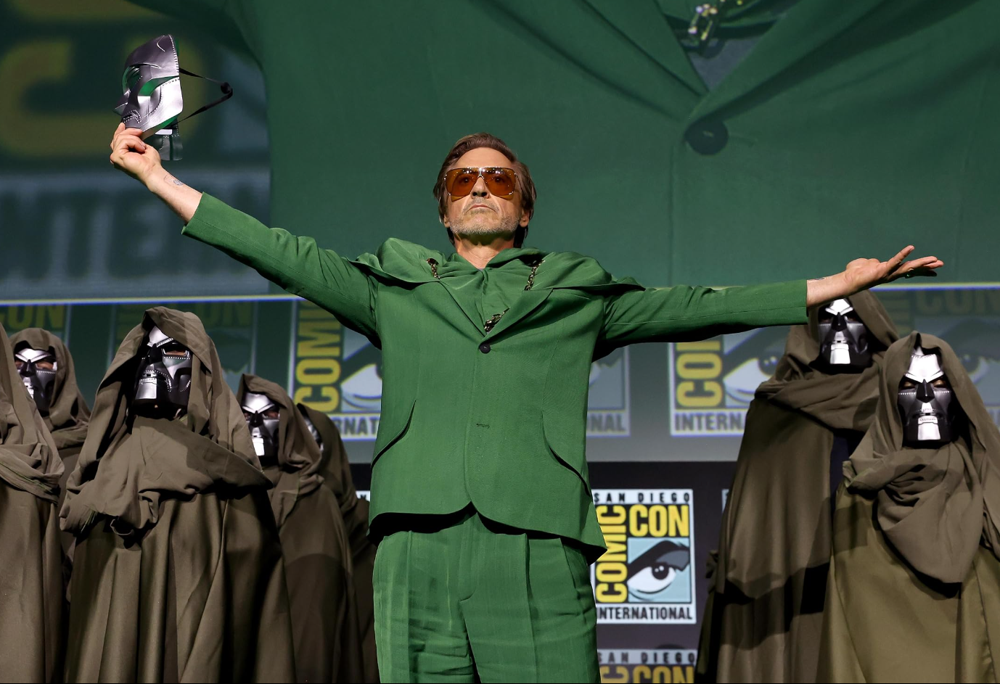
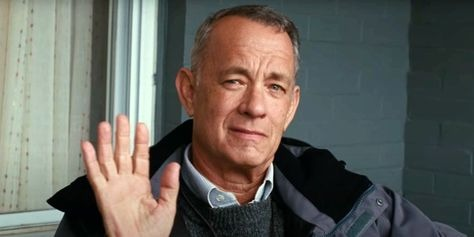
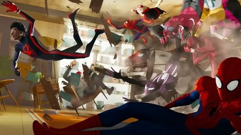

Berita terbaru seputar film, bioskop, dan dunia entertainment
Sutradara pemenang Oscar kembali dengan film epik baru yang menjanjikan pengalaman sinematik tak terlupakan.
Baca SelengkapnyaSetelah 2 tahun vakum, festival film bergengsi ini kembali dengan lineup film yang lebih spektakuler dari sebelumnya.
Baca Selengkapnya
CelebrityPemenang Oscar ini akan melakukan meet and greet eksklusif untuk fans di bioskop CineTix terpilih.
Baca SelengkapnyaTeknologi canggih ini memungkinkan pemesanan tiket lebih cepat dan pengalaman menonton yang lebih personal.
Baca Selengkapnya
ReviewFilm animasi ini tidak hanya memukau secara visual tetapi juga menghadirkan cerita yang dalam dan mengharukan.
Baca SelengkapnyaKami mengintip proses kreatif di balik efek visual menakjubkan yang menghidupkan film sci-fi terbaru ini.
Baca Selengkapnya